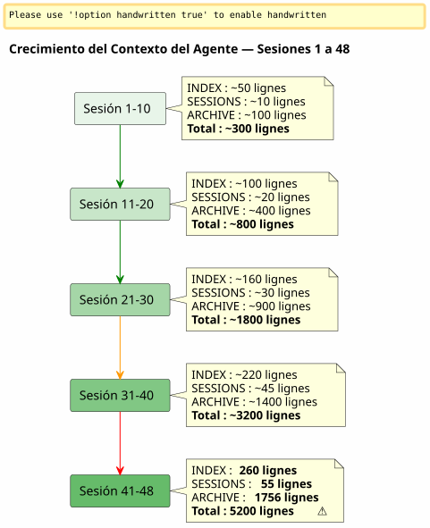

Ventana Deslizante y Onda Fría: Cuando el Contexto del Agente explota y es necesario archivar sin perder
Publié le 26 April 2026
Resumen
Después de 48 sesiones en un solo proyecto y 150+ en total, el sistema de gobernanza Eager/Lazy que había construido con cuidado empezaba a ahogarse. Los archivos de agentes, supuestos de ser ligeros, pesaban 5200 líneas acumuladas. El contexto auto-cargado aumentaba más rápido que mi capacidad para controlarlo. Este artículo cuenta cómo conceptualicé un mecanismo de respaldo — entre ventana deslizante y ola fría idéntica — para mantener un contexto activo ligero sin perder nada.
Señal: 5200 Líneas
Estoy en plena sesión 048 sobre`magic-stick`, mi proyecto de construcción de ISO Linux en vivo. Opencode me observa. Como siempre, ha cargado automáticamente mis archivos Eager al comienzo de la sesión —AGENT.adoc, PROMPT_REPRISE.adoc, .agents/INDEX.adoc. Nada anormal
Pero algo no cuadra. Las respuestas son más lentas. El razonamiento es más difuso. El agente olvida detalles que tenía a la vista hace dos mensajes.
Abro una terminal y tecleo :
wc -l .agents/INDEX.adoc .agents/SESSIONS_HISTORY.adoc \
.agents/archives/COMPLETED_TASKS_ARCHIVE_2026-04.adoc260 líneas para INDEX. 55 para SESSIONS_HISTORY.1756 para COMPLETED_TASKS_ARCHIVE.
El dossier`sessions/`ajoute aún ~3200 líneas. Total:5200 líneasde contexto que se cargan, de una manera u otra, en el cerebro temporal del agente
La estrategia Eager/Lazy que había teorizado en el artículo anterior funciona — pero tiene un defecto de nacimiento que no había anticipado: no tieneno hay mecanismo de envejecimiento. Cada sesión agrega una línea a INDEX, un párrafo a COMPLETED_TASKS, un archivo en sessions/. Nunca sale nada. El contexto es una bola de nieve que crece con cada nueva sesión.

No es un error, es una consecuencia directa del procedimiento de finalización de sesión que archiva meticulosamente cada detalle. El sistema es víctima de su propio éxito.
El Diagnóstico: Triple Redundancia
Le pido al agente que diagnostique el problema. Su respuesta es inmediata y quirúrgica.
Archivo |
Líneas |
rol |
problema |
|
260+ |
EAGER (cargado automático) |
Tabla de todas las sesiones desde la 001 —+1 línea por sesión |
|
55 |
EAGER |
Tabla resumen —redundancia con INDEX |
|
1756 |
EAGER (implícito) |
Detalles completos de todas las sesiones de abril |
|
[No French text was provided for translation, so no output is generated per instructions.] |
PEREZOSO (supuesto) |
Archivos individuales, perono utilizadasPorque todo ya está en COMPLETED_TASKS |
El agente identifica cuatro causas raíz:
-
COMPLETED_TASKS_ARCHIVE absorbe todo— En lugar de apuntar a los archivos`.sessions/`, copia íntegramente cada sesión.
-
INDEX.adoc cumple la función de un historial completo— La tabla "Sesiones Recientes" contiene 30+ entradas.
-
SESSIONS_HISTORY.adoc redundante— Misma info que INDEX, formato diferente.
-
La regla LAZY no se cumple— COMPLETED_TASKS es implícitamente EAGER porque contiene todo.
Su propuesta es radical: limitar INDEX a 10 sesiones, vaciar COMPLETED_TASKS, mover SESSIONS_HISTORY a LAZY puro. Ganancia inmediata :~1900 líneas ahorradas.
Es limpio, eficiente, lógico. Pero tengo un problema con este enfoque.
¿Por qué rechacé la solución evidente?
La solución del agente es la de un ingeniero que optimiza una caché. Limitar. Truncar. Eliminar las redundancias.
Pero estas "redundancias" no lo son. Cada archivo de gobernanza captura unángulo diferentesobre la misma realidad :
-
ÍNDICE= vista macro, tablero ejecutivo
-
HISTORIAL_DE_SESIONES= tabla cronológica lineal, puntuada
-
ARCHIVO_DE_TAREAS_COMPLETADAS= narrativa detallada con métricas
-
sessions/*.adoc" = archivos individuales, contexto completo
No es una duplicación tonta. Es de laperspectiva múltiple estructurada. Es exactamente lo que necesitamos para destilar — para que más tarde, un humano (o un LLM futuro mejor entrenado) pueda cruzar los ángulos y extraer patrones.
Imagina a un científico de datos que te dice: «Eliminemos 3 columnas de 6, están correlacionadas». ¿Qué le respondes? Que la correlación no es redundancia cuando cada columna captura una dimensión diferente del mismo fenómeno. Que es precisamente esta riqueza dimensional la que hace que el conjunto de datos sea explotable.
Es mi intuición. Y la defiendo contra la racionalidad fría del agente.
__ No veo un saco de todo silencioso en mi idea. No rellenamos todo, desplazamos el resultado estructurado del procedimiento de fin de sesión — cada archivo con su ángulo, sus redundancias que en realidad son un enriquecimiento. Es este material multidimensional que será mejor para la destilación. (blank)
El agente encaja el golpe. Y se corrige.
La Proposición : Onda Fría Idéntica
Entonces el agente propone un mecanismo más fino, que respeta mi intuición de conjunto de datos rico mientras resuelve el problema técnico del contexto que explota.
El principio es simple y se inspira directamente del patrónAlmacenamiento en caliente/tibio/fríoaplicado a la gestión de archivos:
-
Caliente (ANSIO)= las 10 sesiones más recientes en INDEX, PROMPT_REPRISE de la sesión N+1, los 2 últimos archivos de sesión
-
Cálido (PEREZOSO)= SESSIONS_HISTORY reciente, SCRIPT_VERIFICATION, toda la documentación de referencia
-
frío (copia/)= todo lo demás, desplazadointacto, sin transformación, sin reindexación
----
----
.agents/
├── INDEX.adoc → Sessions N-9 à N (10 dernières)
├── SESSIONS_HISTORY.adoc → Sessions N-9 à N
├── SCRIPT_VERIFICATION.adoc → Dernière vérif (pas d'historique)
├── PROMPT_REPRISE.adoc → Session N+1 uniquement
├── sessions/ → Sessions N-1 à N uniquement
└── backup/
└── Y2026-sessions-001-039/ ← Vague froide, COPIE INTÉGRALE
├── INDEX.adoc → Sessions 001 à 039 (complet)
├── SESSIONS_HISTORY.adoc → Sessions 001 à 039 (complet)
├── COMPLETED_TASKS_ARCHIVE.adoc → Sessions 001 à 039 (complet)
└── sessions/ → 001.adoc, 002.adoc...
----
La clave del mecanismo:**La copia de seguridad no es un índice central, es una copia fiel de la ola pasada**. Cuando se supera el horizonte de las 10 sesiones activas, no se elimina nada. No se reindexa nada. No se fusiona nada. Se toma el paquete de archivos de agentes tal como estaba en la sesión N-10, y se mueve a`backup/`.
Los archivos activos, por su parte, están truncados:
* INDEX : solo las últimas 10 líneas (ventana deslizante)
* SESSIONS_HISTORY : lo mismo
* COMPLETED_TASKS_ARCHIVE : nuevo archivo para el período en curso
* sessions/ : únicamente las 2 últimas sesiones
[plantuml, format=svg, id=diag-hot-warm-cold, alt="Architecture Hot/Warm/Cold du contexte agent — EAGER/LAZY/backup"]
----
@startuml
skinparam backgroundColor #FEFEFE
skinparam defaultTextAlignment center
skinparam wrapWidth 200
title Arquitectura Hot / Warm / Cold del Agente de Contexto
package "HOT (EAGER)\nCargado automáticamente\n~300 líneas" as HOT #FFCDD2 {
file "INDEX.adoc\n(10 sesiones)" as IDX_HOT
file "PROMPT_REPRISE\n(sesión N+1)" as PRO_HOT
file "AGENT.adoc\n(reglas absolutas)" as AG_HOT
}
package "WARM (LAZY)
Cargado bajo demanda
~500 líneas" as WARM #FFF9C4 {
file "SESSIONS_HISTORY\n(10 últimos)" as HIS_WARM
file "SCRIPT_VERIFICATION
(última)" as VER_WARM
file "PROCEDURES.adoc
(templates)" as PRO_WARM
file "*_REFERENCE.adoc\n(documento técnico)" as REF_WARM
}
package "COLD (backup/)\nNunca cargado\nSólo lectura humana" as COLD #BBDEFB {
folder "Y2026-001-039/" as WAVE {
file "ÍNDICE (completo)" as IDX_COLD
file "SESSIONS_HISTORY\n(completo)" as HIS_COLD
file "COMPLETED_TASKS\n(completado)" as ARCH_COLD
folder "sesiones/ (001-039)" as SESS_COLD
}
folder "Y2026-040-???
(futuro)" as FUTURE
}
HOT --> WARM : "Agente sube
si es necesario"
WARM --> COLD : "Nunca automático
El ser humano va allí solo"
note bottom of COLD
Règle : COPIE INTÉGRALE
Pas de transformation
Pas de réindexation
Read-only après archivage
end note
@enduml
----
El beneficio inmediato es masivo: el contexto EAGER pasa de**~5200 líneas a ~300 líneas**. Una división por 17. Sin haber perdido una sola línea de datos históricos.
== ¿Por qué no es un cajón de sastre?
El agente, en su primera iteración, temía que`backup/`Se convierta en una caja negra — una carpeta donde se archivan documentos que nunca volveremos a leer. Es un temor legítimo. Pero descansa sobre un error de concepto.
Un cajón de sastre es cuando se tiran archivos.**sin estructura, sin convención, sin lógica de agrupación**. Aquí, el backup está estructurado por período (Y2026-001-039), y cada carpeta de backup contiene**la misma estructura**que el expediente`.agents/`activo: INDEX, SESSIONS_HISTORY, COMPLETED_TASKS_ARCHIVE, sessions/
No es un cajón de sastre. Es un**instantánea horodatada**. Se podría incluso decir que es un mecanismo de versionado simplificado — con la salvedad de que no versiona los archivos individualmente, sino el paquete completo de la gobernanza en un momento dado.
Cuando quieras recuperar una información antigua, no necesitas un índice central. Tienes dos opciones:
1. **grep` dirigido**:`grep -r "zsh" backup/Y2026-001-039/`— y encuentras todo lo que menciona zsh en el período, sin importar el ángulo (INDEX, SESSIONS_HISTORY, archivo de sesión).
2. **Reintegración manual**: copias temporariamente la carpeta de backup en el contexto activo, y le pides al agente que analice este período específico.
El índice es implícito. Está en la misma estructura de los archivos — cada uno ya siendo un índice desde su propio ángulo.
== La metáfora de las estanterías
Para hacer el mecanismo intuitivo, lo he conceptualizado en tres estantes :
* **Estantería 1 (EAGER)**— el plan de trabajo. Lo que necesito *ahora*. INDEX reciente, PROMPT_REPRISE, reglas absolutas. Ligero, inmediato, crítico.
* **Estantería 2 (LAZY)**— la biblioteca de consulta. Lo que puedo buscar bajo petición. Referencias técnicas, historial reciente, procedimientos. Más voluminoso, pero no cargado en memoria.
* **Bodega (backup/)**— los archivos fríos. Todo lo que ha pasado pero que no quiero desechar. El agente nunca entra allí. El ser humano baja cuando quiere destilar.
El agente propuso inicialmente una cuarta estantería — un`index-backup.adoc`que sería LAZY y contendría un índice de todo el backup. Lo rechacé. Sería una redundancia más en un sistema que ya sufre de crecimiento lineal. La estructura de los archivos archivados ya es un índice.
== El sensor de dos disparadores
La conceptualización era sólida, pero quedaba un punto ciego:**¿Cuándo exactamente desencadenar la rotación?**El artículo inicial lo identificaba como una pregunta abierta. Dos días después, la respuesta está codificada en los archivos de gobernanza de seis proyectos: un sensor con dos disparadores.
=== El Desencadenador Automático — `N % 10 == 0
El primer desencadenante es matemático. Cuando el número de sesión es múltiplo de 10 — sesión 10, 20, 30, 40 — la rotación de backup se ejecuta automáticamente dentro del procedimiento de fin de sesión, justo después del paso 6.
¿Por qué 10? Es el compromiso entre dos fuerzas opuestas: una ventana demasiado corta (5 sesiones) pierde el contexto necesario para la continuidad; una ventana demasiado larga (20 sesiones) no resuelve el problema de sobrepeso del contexto. Diez sesiones, a un ritmo de una a dos sesiones por día, cubren aproximadamente una semana de trabajo — suficiente para que el agente recuerde las decisiones recientes, pero no suficiente para que el contexto explote.
=== El Desencadenante por Umbral — 500 Líneas EAGER
El segundo disparador es dinámico. Independientemente del número de sesión, si los archivos EAGER acumulados superan**500 líneas**, la rotación se dispara.
Este umbral protege contra el escenario en el que las sesiones son excepcionalmente productivas — mucho contenido escrito en pocas sesiones. Una sesión que produce 120 líneas de contenido editorial hace crecer COMPLETED_TASKS_ARCHIVE mucho más rápido que una sesión de depuración que corrige dos líneas. El umbral de 500 líneas, medido vía`wc -l .agents/INDEX.adoc .agents/archives/COMPLETED_TASKS_ARCHIVE_*.adoc PROMPT_REPRISE.adoc`, detecta esta asimetría.
=== El Desencadenador Manual — "copia de seguridad de rotación
Finalmente, el humano mantiene el control. Las palabras clave`rotation backup`, `backup rotation` ou `lance la rotation backup`Activan el procedimiento a petición, independientemente del final de la sesión. Útil cuando se siente que el contexto se vuelve pesado pero aún no se ha alcanzado un múltiplo de 10, o cuando se desea archivar una fase de trabajo antes de comenzar una nueva.
[plantuml, format=svg, id=diag-capteur-trigger, alt="Les trois déclencheurs du capteur de rotation backup — automatique, seuil, manuel"]
----
@startuml
skinparam backgroundColor #FEFEFE
skinparam defaultTextAlignment center
skinparam wrapWidth 200
title Sensor de Rotación Backup — Los Tres Desencadenadores
start
:Procédure de fin de session;
note right: Mots-clés "fin de la sesión"\nou "paramos aquí"
:Étapes 1 à 6\n(archivage standard);
note right
1. Archive sessions/N.adoc
2. MAJ PROMPT_REPRISE
3. MAJ SESSIONS_HISTORY
4. MAJ INDEX.adoc
5. MAJ TEST_COVERAGE
6. MAJ COMPLETED_TASKS
end note
if (N % 10 == 0\nOU\nEAGER cumulé > 500 lignes ?) then (oui)
:⚙️ Rotation Backup\n(étape 7);
note right
1. Créer backup/Y20XX-sessions-X-Y/
2. Copier intégrale INDEX + HISTORY
+ COMPLETED_TASKS + sessions/
3. Tronquer actifs à 10 sessions
4. Ajouter _Localisation active_
end note
else (non)
:Pas de rotation;
endif
:Checklist [✅] x 7\n(si applicable);
stop
@enduml
----
Este diagrama muestra la inserción exacta del sensor en el procedimiento de finalización de sesión. El paso 7 es opcional — solo se ejecuta si una de las dos condiciones es verdadera — pero se *verificada* sistemáticamente. La lista de verificación final incluye`[✅] 7. Backup roté (si applicable)`.
=== El Bucle Cerrado
Este sensor cierra el bucle abierto por el artículo anterior. La gobernanza Eager/Lazy había resuelto el problema de la memoria del agente entre dos sesiones. El mecanismo Hot/Warm/Cold ha resuelto el problema de la memoria que aumenta. El sensor de dos desencadenantes resuelve el problema del *cuándo* — quitando al humano la carga mental de vigilar el tamaño del contexto.
[plantuml, format=svg, id=diag-boucle-fermee, alt="Les trois couches de la gouvernance agent — Eager/Lazy, Hot/Warm/Cold, Capteur"]
----
@startuml
skinparam backgroundColor #FEFEFE
skinparam defaultTextAlignment center
title Las Tres Capas de la Gobernanza de Agentes
left to right direction
package "Capa 1 — Memoria\n(Artículo 0108)" as C1 #E8F5E9 {
rectangle "**EAGER**
Panel de control
Cargado automáticamente" as EAG
rectangle "**LAZY**
Manual del propietario
Cargado bajo demanda" as LAZ
EAG -[hidden]right-> LAZ
}
package "Capa 2 — Envejecimiento
(Artículo 0110)" as C2 #FFF9C4 {
rectangle "**HOT**
10 sesiones activas
~300 líneas" as HOT
rectangle "**WARM**
Referencias
Procedimientos" as WRM
rectangle "**FRÍO**
backup/
Ola fría" as CLD
HOT -[hidden]right-> WRM
WRM -[hidden]right-> CLD
}
package "Capa 3 — Desencadenante\n(Hoy)" as C3 #BBDEFB {
rectangle "**Automático**
N % 10 == 0" as AUTO
rectangle "**Umbral**\n> 500 líneas" as SEUIL
rectangle "**Manuel**
copia de seguridad rotativa" as MAN
AUTO -[hidden]right-> SEUIL
SEUIL -[hidden]right-> MAN
}
C1 --> C2 : "La memoria crece\n→ hace falta un mecanismo\nde envejecimiento"
C2 --> C3 : "El envejecimiento
→ hace falta un desencadenador
para ejecutarlo"
note bottom of C3
✅ Déployé sur 6 projets
magic-stick · bakery-gradle
plantuml-gradle · cheroliv.com
jhipster-gradle-plugins
quizz-benchmark-gradle
end note
@enduml
----
Las tres capas se apilan lógicamente. La primera le da una memoria al agente. La segunda impide que esa memoria ahogue al agente. La tercera automatiza el mantenimiento de esa memoria para que el humano no tenga que pensar en ello.
=== La migración efectiva en cheroliv.com
El mecanismo no se quedó teórico. Sobre`cheroliv.com`, la primera rotación de copia de seguridad se ejecutó el 29 de abril de 2026 — las sesiones -6 a 2 se han migrado a`.agents/backup/Y2026-sessions-neg6-a-002/`:
|===
|Archivo |Antes de la rotación |Después de la rotación |ganancia |`.agents/INDEX.adoc` |19 sesiones listadas |10 sesiones (3-12) |-9 entradas |`.agents/SESSIONS_HISTORY.adoc` |18 sesiones |10 sesiones |-8 entradas |`COMPLETED_TASKS_ARCHIVE` |161 líneas (sesiones 1-12) |135 líneas (sesiones 3-12) |-26 líneas |`sessions/` |20 archivos |10 archivos |-10 archivos |**copia de seguridad/** |inexistente |1 ola fría (10 sesiones archivadas) |+1 paquete frío
|===
La ganancia en líneas era modesta — el proyecto es joven, 12 sesiones — pero lo importante es que el**el mecanismo está establecido**. La próxima rotación automática se activará en la sesión 20, o antes si se alcanzan las 500 líneas EAGER.
== La Lección Humano-Agente
Esta sesión 048 me ha enseñado algo fundamental sobre la colaboración con un agente IA.
El agente tiene un sesgo natural: busca**optimizar**, à **simplificar**, à **eliminar las redundancias**. Es el sesgo de un sistema entrenado para producir respuestas limpias y concisas. Ante un conjunto de datos rico y multidimensional, su primer reflejo es reducirlo a su forma más simple.
El ser humano, por su parte, tiene una intuición diferente: presiente que la redundancia estructurada es una**ventaja**, no es un defecto. Que la diversidad de ángulos sobre una misma realidad es precisamente lo que permitirá, más tarde, una destilación de calidad.
No es que el agente esté equivocado. Es que su 'óptimo' no es el mío. El agente optimiza para el**presente**— el contexto inmediato, la respuesta rápida a la pregunta planteada. El ser humano optimiza para el**futuro**— la capacidad de encontrar, cruzar, destilar en tres meses o tres años.
____ Lo que quiero es el material bruto. Tus reflexiones, tus dudas, tus respuestas a mis preguntas. No tu síntesis. La síntesis, sé hacerla mejor que tú. Quiero la materia prima. ____
Esta frase que le dije al final de la sesión lo resume todo. El agente es una herramienta de producción. El humano es la herramienta de destilación. La gobernanza no está hecha para que el agente lo entienda todo solo — está hecha para que el humano pueda, más tarde, trabajar el material producido.
La ola fría idéntica es la traducción arquitectónica de esta filosofía: no se tira nada, no se fusiona nada, no se reindexa nada. Se desplaza el paquete intacto. La destilación vendrá más tarde, a mano, por el humano.
== La continuación lógica del artículo anterior
Si has leídolink:/blog/2026/0108_gouvernance_agent_opencode_eager_lazy_post.html[el artículo sobre la estrategia Eager/Lazy], reconocerá la progresión natural :
1. **Artículo 0108**El gobierno Eager/Lazy: *cómo* estructurar el contexto del agente en dos niveles de disponibilidad
2. **Este artículo 0110**— El mecanismo de backup : *comment* hacer envejecer este contexto sin perderlo cuando se vuelve demasiado voluminoso
El primer artículo respondía a la pregunta: « El agente no recuerda nada entre dos sesiones, ¿cómo darle una memoria?
Esto responde a la pregunta que inevitablemente se deriva de la primera: «La memoria crece en cada sesión, ¿cómo impedir que ahogue al agente sin borrarla?
La respuesta está en un patrón:**Caliente/Templado/Frío**, aplicado a los archivos de gobernanza. Y en principio:**nunca perder nada, siempre relocalizar todo**.
== Enlaces
* Artículo anterior :link:/blog/2026/0108_gouvernance_agent_opencode_eager_lazy_post.html[Gobernar un agente IA con AsciiDoc]
* Mi sitio: https://cheroliv.com
* El proyecto`magic-stick`: https://github.com/cheroliv/magic-stick
---
Un buen sistema de gobernanza nunca elimina datos. Los ordena.
----